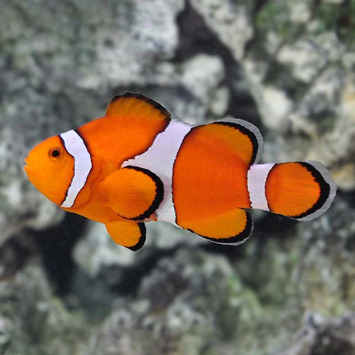
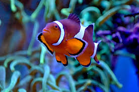
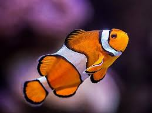

tabbytha thhe cat



Meet Nemo
Nemo is a bright orange clownfish with a big personality in a small body! He’s always swimming around, exploring his tank, and poking his head out from his favorite hiding spot.
He’s super active and fun to watch—whether he’s darting through bubbles or playing in his coral. Nemo loves mealtime and will swim right up when he sees food coming.
He’s a peaceful little guy who gets along well with other calm fish and would love a clean tank with plenty of places to hide and explore.
If you’re looking for a colorful, playful fish to bring some life to your aquarium, Nemo is ready to make a splash in your home!